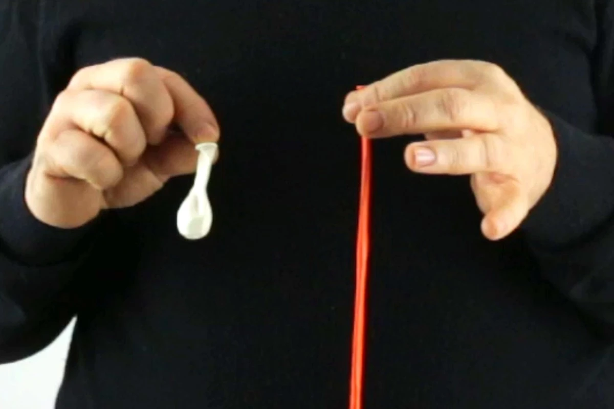
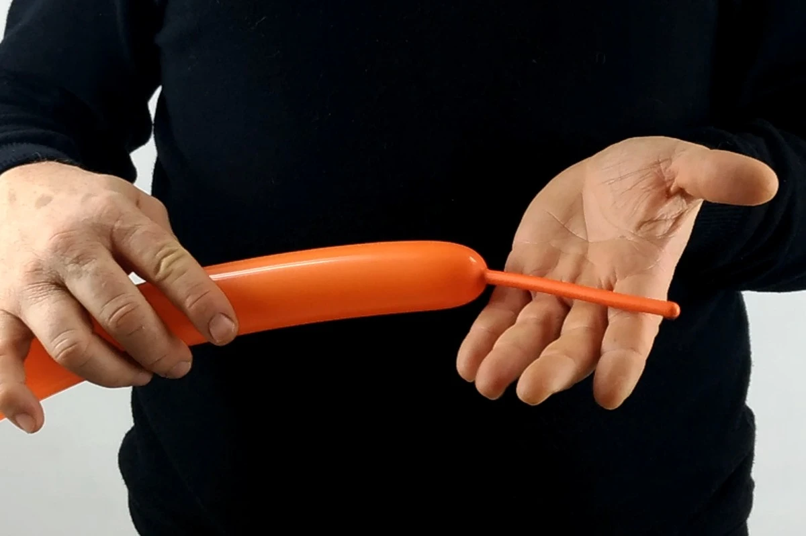

1- Necesitarás un globo para escupir "260" naranja (o cualquier otro color) para el cuerpo, y un pequeño globo blanco (redondo) para los ojos.2 - Inflar el "260" naranja, dejando la anchura de aproximamente cinco (o incluso 6) dedos no inflado.3- Formar una grande burbuja "salchicha" justo después del nudo (aproximadamente tres dedos de anchura).4- Luego formar una segunda "salchicha" burbuja, pero más pequeño que la primera (de aproximadamente dos dedos de anchura).5- Luego formar una tercera "salchicha" burbuja, exactamente igual que la segunda (de aproximadamente dos dedos de anchura).6- Finalmente formar una cuarta burbuja "salchicha", exactamente igual que la primera (de aproximadamente tres dedos de anchura).7- Ahora deberías tener esta serie de burbuja "salchicha": una larga, luego una pequeña, una pequena otra vez, y por fin, una larga, justo igual a la primera.8- Atar la serie de burbujas juntas, mientras apretando el nudo del globo y girándolo varias veces en su base y a través del bucle que se formó.9- Una vez que está asegurado, formar una larga burbuja que debería ser aproximadamente del mismo tamaño que una mano completa.10- Sostenla, mientras formando una burbuja perfectamente redonda justo después. 11- Transforma esa burbuja redonda en un pinch twist. 12- Luego formar otra burbuja redonda del mismo tamaño,13- Que también convertirás en un pinch-twist.14- luego formar otra larga burbuja que será exactamente de la misma longitud que la que había entre los 2 pinch-twists y el bucle.15- Torcer esas dos largas burbujas en su base para juntarlas. 16- Formar una tercera burbuja, de la misma longitud que las dos largas burbujas que acabamos de juntar juntos.17- Adjúntalo a ellos mientras torciendo el resto del globo alrededor de su base (que también es la base de los dos pinch twists).18- Si el resto del globo es un poco demasiado largo,19- Haz un pequeño corte con una tijera (o igual con una aguja) en su punta para dejar escapar el aire un poquito antes de hacer el nudo...20- La idea es de dividir el resto del globo en dos burbujas de longitud desigual.21- La primera debería ser un poquito más largo (pero mucho más pequeño que las 3 largas burbujas que hemos juntado juntos).22- La última debería ser más pequeña que la anterior.23- Ahora tira y torce la base de esta pequena burbuja todo el camino entre las tres largas burbujas y el bucle. La tension curvara las tres burbujas mas largas un poquito.24- Una vez hecho, pon esa última pequeña burbuja en medio del grupo formado por las cuatro otras burbujas: las tres largas burbujas curvadas y la recta más corta (la que será la base de la parte inferior del pez)25- Ahora coge el primer bucle de burbujas que hemos hecho, y presionar el doblez formado entre las dos burbujas más pequeñas contra el doblez formado entre las dos burbujas más largas.26- Eso le permitiría torcer fácilmente cada pequeña burbuja con su homólogo, para formar la cola del pez.27- Ahora infla el pequeño globo redondo. Debería ser un poco menos voluminoso que la cola que acabamos de formar.28- Divide el globo redondo en dos burbujas de igual tamaño. Es un poco difícil al inicio, aunque no mucho diferente que hacer una burbuja regular con un globo para esculpir (excepto que el globo redondo es más gordo y más bajo, por lo tanto, más difícil para manejar).29- Recupera el cuerpo naranja del pez y pon una de las burbujas blancas debajo de la burbuja naranja curvada de la parte superior (aquella opuesta a la recta más corta), acercándolo lo más cerca posible a los dos pinch twists.30- Luego encuentra la última pequeña burbuja que era hecha con el resto del globo naranja y pon su punta entre las 2 burbujas blancas, asegurándolas de esta manera y llenando cualquier vacío.31- Con un rotulador negro dibuja los ojos en las burbujas blancas.32- ¡Ya está, el globo se terminó! Podrías parar aquí si quisieras.33- Sin embargo, si tuvieras tiempo y el material, podrías añadir un último detalle por inflar un globo para esculpir “260” transparente, pero solo a la mitad.34- Y con eso, hacer una serie alternada de burbujas rondas y pinch-twists.35- La última burbuja de la serie debería ser introducida más atrás a mitad camino en las series, contra otra burbuja o pinch-twist, para formar un pequeño grupo.36- Puedes atarlo al pez de la manera que prefieres. Podrías colocarlo directamente en la boca, mientras que yo lo prefiero en el lado, para dar una impresión de movimiento.¿No son bonitos? Hasta pronto! Para otra lección... ¡Con Môssieur Ballon!